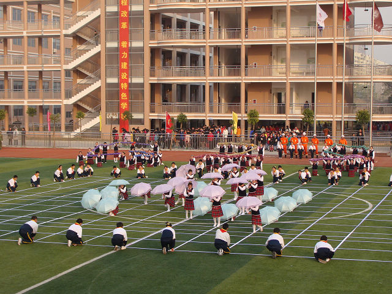

五子棋舞蹈――江苏南通市港闸区某次活动现场掠影
首页
五子棋新闻
#1 <font color="red">五子棋舞蹈――江苏南通市港闸区某次活动现场掠影</font> 作者：黄药师 发表时间：2010-12-16 21:09:17
首先是画棋盘


以雨伞做棋子（本来是选择黑白色雨伞，貌似说为了好看改成这样的颜色）

演绎对局？

长连禁手？？

［ 掌棋宣传员 于 2010-12-16 21:51:24 时花20金币送鲜花一朵］
［ 掌棋宣传员 于 2010-12-16 21:51:25 时花20金币送鲜花一朵］
［ 掌棋宣传员 于 2010-12-16 21:51:26 时花20金币送鲜花一朵］
#2 Re:五子棋舞蹈――江苏南通市港闸区某次活动现场掠影 作者：掌棋宣传员 发表时间：2010-12-16 21:52:32
这个太牛了.....
#3 Re:五子棋舞蹈――江苏南通市港闸区某次活动现场掠影 作者：掌棋宣传员 发表时间：2010-12-16 21:53:43
数了数就是横竖14路的棋盘,如果能正规点,再演绎几个经典定式就好了...
#4 Re:五子棋舞蹈――江苏南通市港闸区某次活动现场掠影 作者：维尔斯特拉斯 发表时间：2010-12-16 22:00:55
比如瑞星大定
#5 Re:五子棋舞蹈――江苏南通市港闸区某次活动现场掠影 作者：有志青年 发表时间：2010-12-16 22:03:16
走定势就太'实'了，视频不久放出